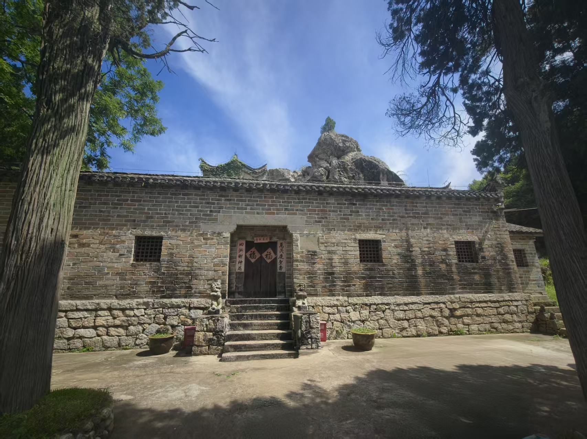
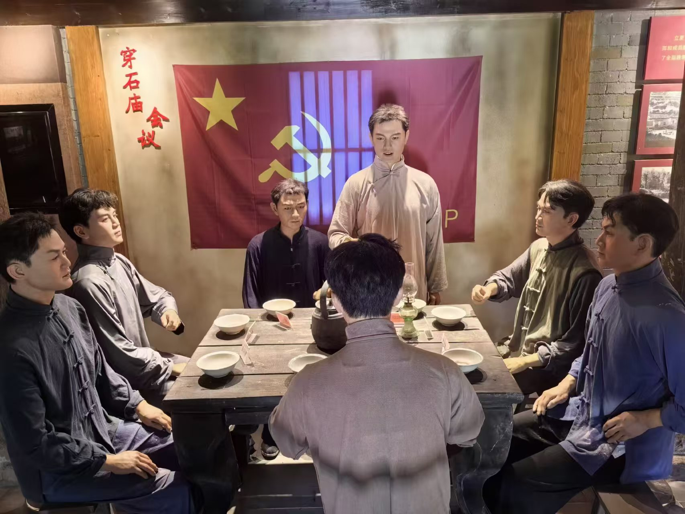
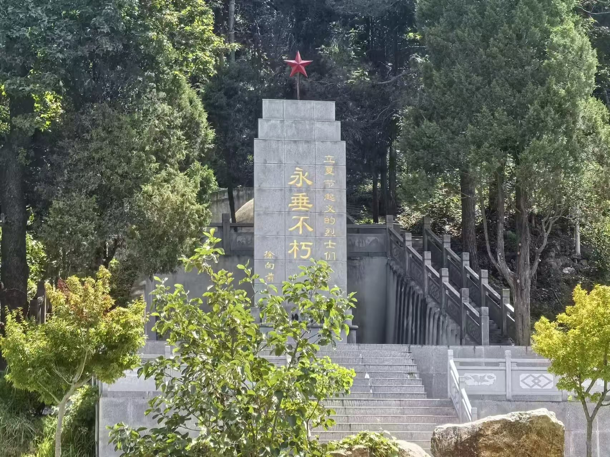
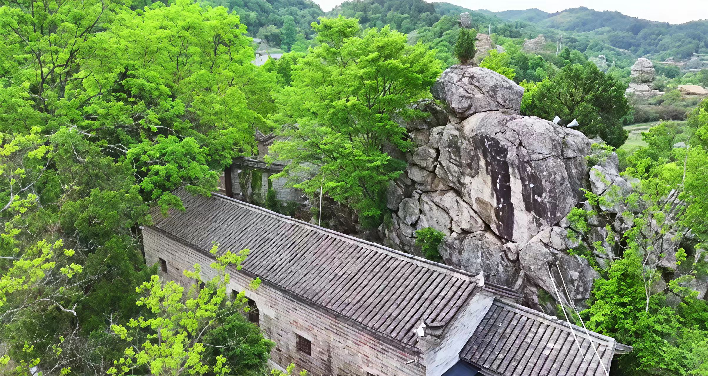

1929年春，商南地区（今金寨县西部）党组织活动频繁，国民党反动势力开始疯狂镇压。原定中秋节举行的武装起义面临暴露风险。在此危急关头，中共商罗麻特别区委于5月2日在吴家店镇穿石庙召开紧急会议。
徐子清（特委书记）、周维炯、肖方、徐其虚、廖秉国、毛月波等十余位起义骨干。会议在穿石庙的一间密室中进行，由徐子清主持。
① 提前起义时间：将原定中秋节起义提前至立夏节（5月6日）夜，趁敌人过节防备松懈之际发动突袭。
② 制定多点突袭战术：兵分多路，同时在吴家店、斑竹园、南溪等地点发动暴动，使敌人首尾不能相顾。
中共商罗麻特别区委在吴家店穿石庙召开紧急会议，决定提前发动起义，制定多点同时暴动计划。会议推举徐子清、周维炯为起义总指挥。
各暴动点负责人分头传达会议精神，秘密集结农民武装，准备武器弹药。吴家店地区的地下党员以走亲访友为掩护，暗中联络起义力量。
立夏节之夜，吴家店各地同时发动武装暴动：包家畈、火焰垴、穿石庙、西庄等暴动点位一举摧毁当地反动民团武装，缴获枪支弹药，打响了豫东南武装革命的第一枪。
吴家店、南溪、斑竹园等各地暴动得手后，起义队伍按计划向斑竹园方向会师。沿途宣传革命主张，吸收农民加入，队伍不断壮大。
各路起义队伍在斑竹园朱氏祠胜利会师，正式宣布成立中国工农红军第11军第32师，师长周维炯，党代表徐子清。这是鄂豫皖边区第一支正规红军武装。
红32师以吴家店、斑竹园为依托，开辟豫东南革命根据地，深入发动群众、建立苏维埃政权、开展土地革命，为后续鄂豫皖苏区的形成奠定了坚实基础。




立夏节起义是鄂豫皖边区首次取得全面胜利的武装起义，是豫东南革命根据地的起点。它成功地以最小的代价瓦解了商南地区的反动武装，创建了红32师——鄂豫皖边区第一支正规红军队伍。穿石庙会议作为起义的决策原点，见证了革命先辈在危急关头的英明决断，在中国革命史上留下了不可磨灭的印记。
各遗址全天免费开放
建议参观时间 8:00-17:00
所有红色遗址均免费
面向社会公众开放
自驾：G42金寨出口→吴家店镇
公交：金寨县城乘乡镇班车
保持肃穆、爱护文物
禁止吸烟、文明参观
向立夏节起义革命烈士纪念碑献花致敬
已有 0 位访客献花